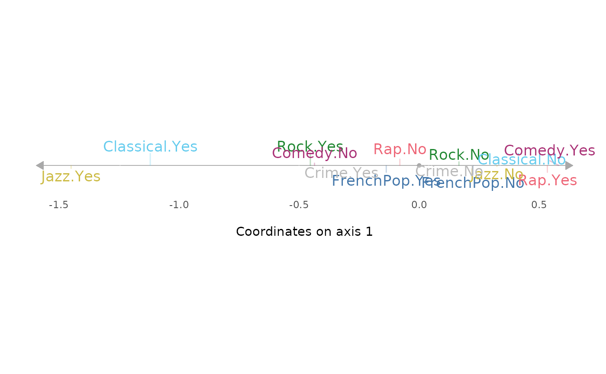
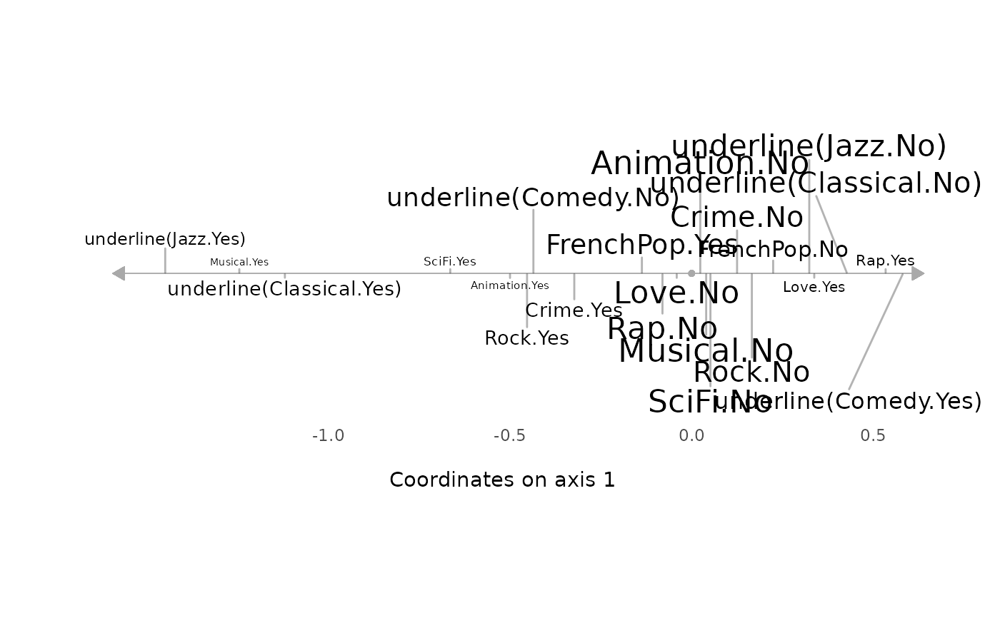
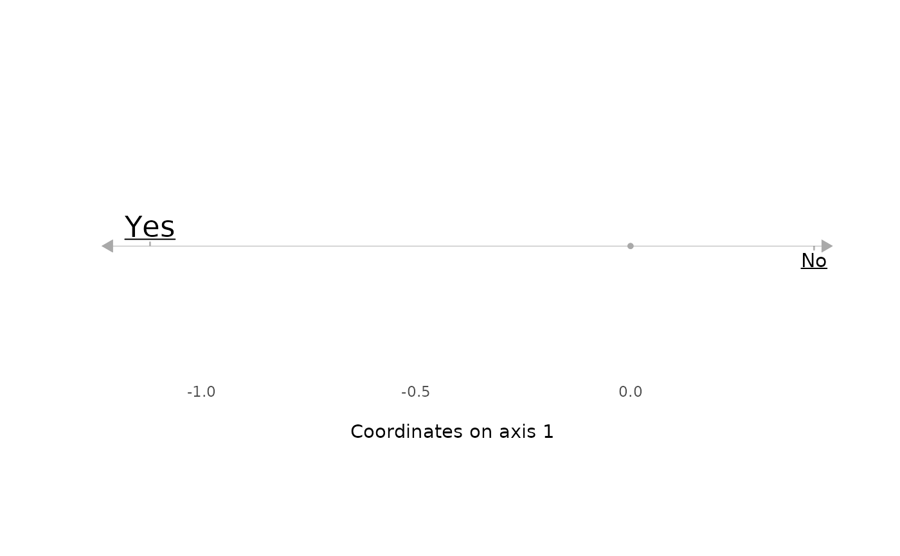
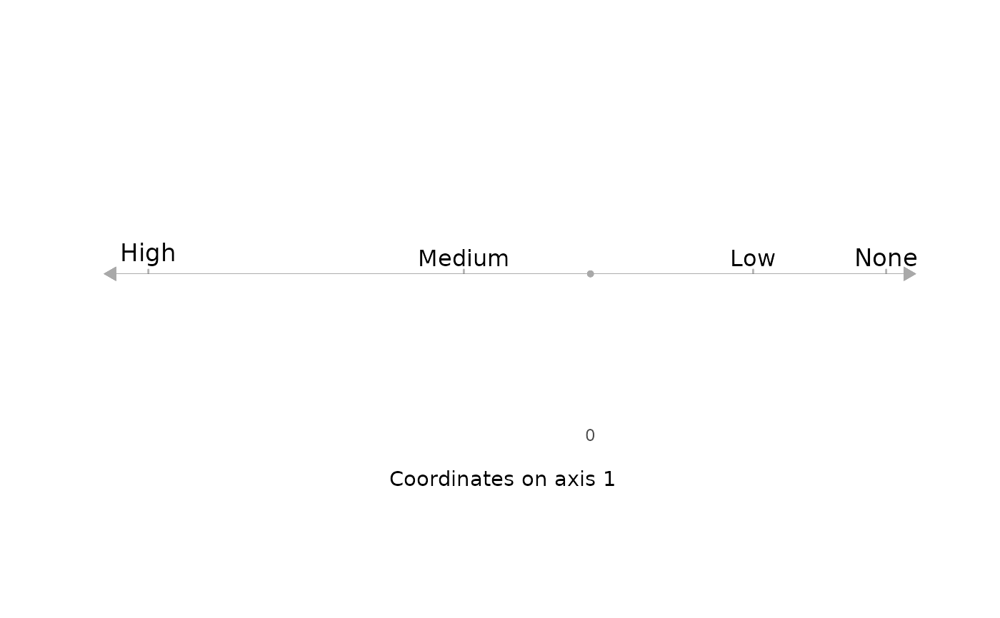

ggaxis_variables.RdPlots variables on a single axis of a Multiple Correspondence Analysis. Variables can be active or supplementary.
ggaxis_variables(resmca, var = NULL, axis = 1, prop = NULL,
underline = FALSE, col = NULL, vlab = TRUE)object of class MCA, speMCA, csMCA, stMCA or multiMCA.
If NULL (default), all the active variables of the MCA are plotted. If a character string, the named active variables of the MCA is plotted. If a factor, it is plotted as a supplementary variable.
numeric value. The MCA axis to plot. Default is 1.
If NULL (default), the size of the labels is constant. If "freq", the size is proportional to the weights of categories. If "ctr", it's proportional to the contributions of categories (only used for active variables). If "cos2", it's proportional to the squared cosines of the categories. If "pval", it's proportional to 1 minus the p-values of typicality tests (only used for supplementary variables). If "cor", it's proportional to the point biserial correlation of the categories (only used for supplementary variables).
logical. If TRUE, the labels of the categories with contributions above average are underlined. Default is FALSE. Only used for active variables.
character string. Color name for the labels of the categories. If NULL and var=NULL, the default palette of ggplot2 is used, with one color per variable. If NULL and var is not NULL, labels are black.
Logical. Should the variable names be used as a prefix for the labels of the categories. Default is TRUE.
a ggplot2 object
Le Roux B. and Rouanet H., Multiple Correspondence Analysis, SAGE, Series: Quantitative Applications in the Social Sciences, Volume 163, CA:Thousand Oaks (2010).
Le Roux B. and Rouanet H., Geometric Data Analysis: From Correspondence Analysis to Stuctured Data Analysis, Kluwer Academic Publishers, Dordrecht (June 2004).
# specific MCA of Taste example data set
data(Taste)
junk <- c("FrenchPop.NA", "Rap.NA", "Rock.NA", "Jazz.NA", "Classical.NA",
"Comedy.NA", "Crime.NA", "Animation.NA", "SciFi.NA", "Love.NA",
"Musical.NA")
mca <- speMCA(Taste[,1:11], excl = junk)
# plots all the active categories on axis 1
ggaxis_variables(mca)

# the same with other plotting options
ggaxis_variables(mca, prop = "freq", underline = TRUE, col = "black")

# plots Active variable Classical on axis 1
ggaxis_variables(mca, var = "Classical", axis = 1, prop = "ctr", underline = TRUE)

# plots supplementary variable Educ on axis 1
ggaxis_variables(mca, var = Taste$Educ, axis = 1, prop = "pval")
